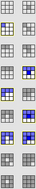
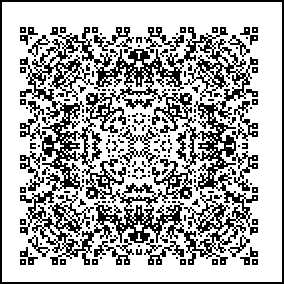

4. Cellular Automata and Fractal Evolution
Two-Dimensional CA Examples
For this Moore outer totalistic CA, the pattern growing from a single seed seems not to freeze in the center, at least for a few hundred generations.


Return to
2D CA Examples
.